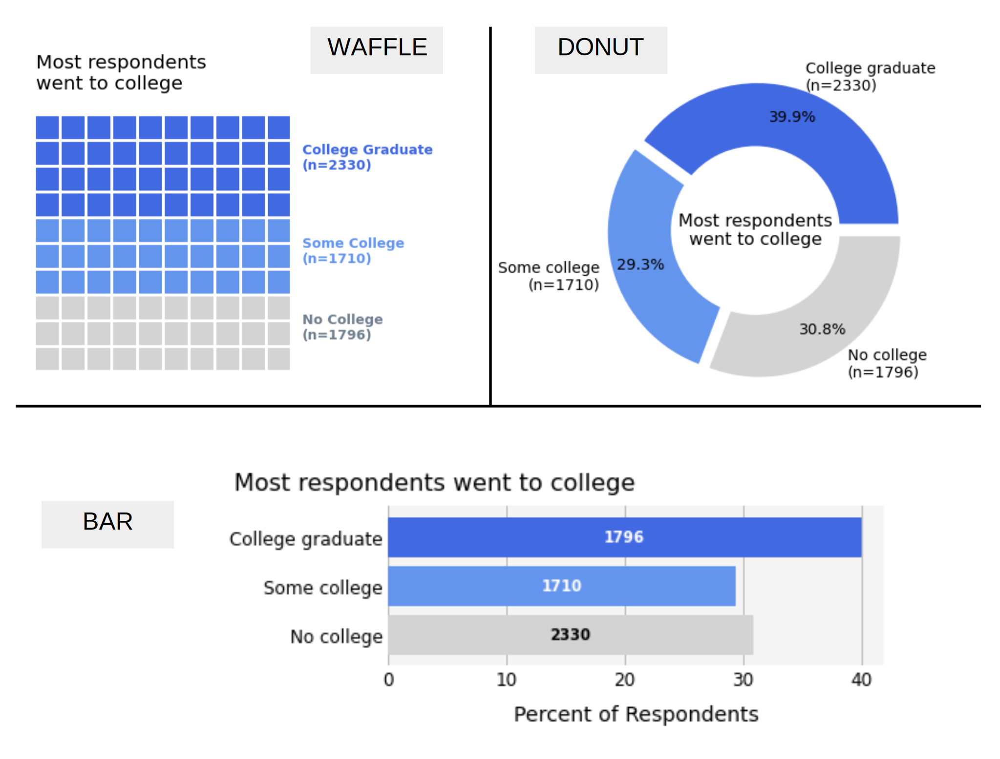

How do we display data for a single category?
For the article, Why Many Americans Don't Vote, five thirty eight conducted a survey online to ask Americans about their voting habits. They also collected demographic information including education level. We will look at the education level of people who voluntarily answered the survey to determine if there might any bias (this is known as volunteer bias) in who participates. The three visualizations below all show the exact same data. We want to figure out which one is most effective in making the main point.
The purpose of the visualization is to show that most of the people who responded to the survey went to college (even if they didn't graduate). About 70% of respondents did attend college, while 30% did not. Notice that in all of the plots, gray is used for the No College category - this is done purposefully to draw attention to the larger group that did attend college.
The waffle plot has 100 blocks in it and the number of shaded blocks represents the percentage in each group, so the number of blocks is what we use to compare group size. The actual number of individuals is provided in the annotations (this is true for all plots). The donut chart uses arcs of a circle to show the group size, while the bar chart uses the length of the bars. It is harder for a viewer to make sense of radial or circular data - if the numbers weren't there would you be able to tell me accurately the difference in the size of the arcs? It's tough. Given that we only have three values to show, the bar chart may be the best choice, since it uses less space to show the data and allows for a quick comparison by the viewer. However, we would still need to think for a minute to add together the two blue bars. With a waffle plot, we can count out the values exactly, we see the grouping of the two blue sections right away, and we can do this quickly for values out of 100, but it is more difficult to comprehend for other totals.
You may be wondering, so what's the right answer? The answer is, it depends. If you are low on space, the bar chart is a great choice - it is compact, doesn't use much ink and clearly makes the point. The waffle plot may be faster for a viewer to comprehend for a round number like 100. While the donut chart is perhaps the hardest to decipher intuitively, donut charts can catch the viewers eye and use space effectively by allowing for the main message in the center. In general, the donut chart is least preferable in terms of truthfulness…and please NEVER use a pie chart!